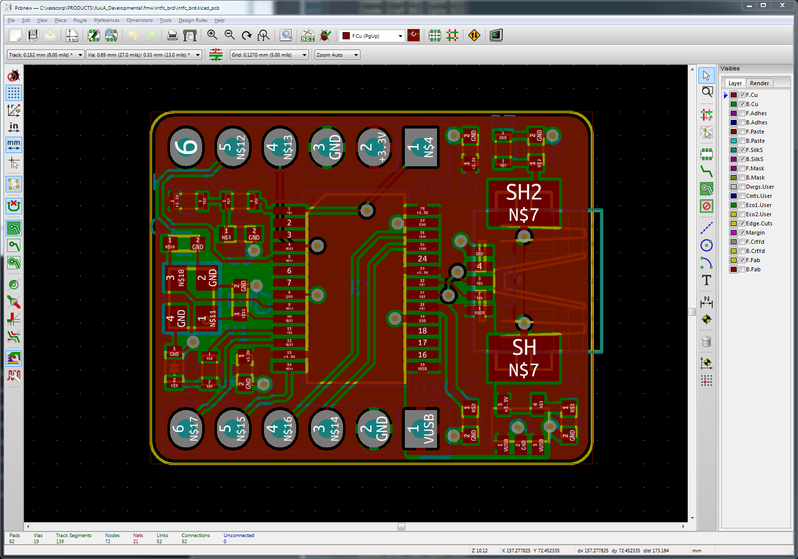

This post describes using SKiDL for a USB-to-JTAG interface that was taken all the way from concept to physically building a device.

The interface is pretty simple. It's built from the following stuff:
- A PIC32MX220 microcontroller.
- A 12 MHz crystal.
- Some reset circuitry.
- A six-pin Microchip programming header (for the PIC32).
- A mini-USBB connector.
- A six-pin header for connecting to a JTAG port.
- A 5V-to-3.3V voltage regulator.
- A status LED.
Here's a block diagram to help orient you as the SKiDL code is presented.

Any SKiDL project starts as a Python file.
In this example, I created the file intfc_brd.py.
The first line in the file imports all the functions and classes of the skidl module:
from skidl import *
Next, I made strings that contain the paths to some of my personal KiCad symbol libraries.
If these libraries ever move to another directory, then I only have to make a change here.
(The libraries that come with KiCad are included by default by querying the KISYSMOD
environment variable.)
# Libraries.
xess_lib = r'C:\xesscorp\KiCad\libraries\xess.lib'
pic32_lib = r'C:\xesscorp\KiCad\libraries\pic32.lib'
pickit3_lib = r'C:\xesscorp\KiCad\libraries\pickit3.lib'
Then I made templates for a resistor and a capacitor from the standard KiCad device library.
I'll make copies of these later on whenever I need one of these common components
in the design.
As with the libraries, if I ever need to modify these components (to use a
different footprint, for instance) then I only need to make the change here to
have it take effect globally.
# Some common parts used as templates.
res = Part("Device", 'R', footprint='Resistors_SMD:R_0603', dest=TEMPLATE)
cap = Part("Device", 'C', footprint='Capacitors_SMD:C_0603', dest=TEMPLATE)
I start the actual circuit design by defining three nets that distribute power
to all the other parts: ground, 5V from the USB port, and 3.3V generated by the
voltage regulator.
I also set the drive attribute of the ground and 5V nets to indicate they are
for distributing power.
(I didn't need to do that for the 3.3V net because that will happen automatically
when it is connected to the output of the regulator.)
# Global nets.
gnd = Net('GND')
gnd.drive = POWER
vusb = Net('VUSB')
vusb.drive = POWER
vdd = Net('+3.3V')
Next, I instantiated a voltage regulator from my personal library: a Texas Instruments TPS79333.
I also assigned an SOT-23-5 package to it from the TO_SOT_Packages_SMD footprint
library distributed with KiCad.
Since I only needed one of these regulators, I omitted the dest=TEMPLATE argument and
instantiated it directly into the circuit instead of making it a template.
# Regulate +5V VUSB down to +3.3V for VDD.
vreg = Part(xess_lib, 'TPS793XX', footprint='TO_SOT_Packages_SMD:SOT-23-5')
The input power to the regulator arrives on the 5V net from the USB port. The enable pin is also pulled high with the 5V net in order to enable the regulator. This can all be done with the following, single statement. (Note that I used names instead of numbers to reference the regulator pins. This makes the design intent clearer and decouples it from the pin numbering scheme of a particular package.)
vreg['IN, EN'] += vusb
The next two lines connect the ground pin of the regulator to the ground net, and the regulator output to the 3.3V net:
vreg['GND'] += gnd
vreg['OUT'] += vdd
The TPS79333 regulator also has a noise reduction pin where a small capacitor
is attached to filter out hash on the regulated output.
The cap template I created earlier is instantiated as noise_cap with an assigned value of 0.01 μF.
Then, the pins of noise_cap are attached to the noise reduction pin of the voltage
regulator and ground, respectively.
noise_cap = cap(value='0.01uf')
noise_cap[1, 2] += vreg['NR'], gnd
Next up is the microcontroller: a PIC32MX220 in a 28-pin SSOP package.
The part is found in my personal PIC32 library, and the SSOP package is
in a KiCad footprint library.
(The rather cryptic name for the PIC32 results from my naming the library part
PIC32MX2*0F***B in order to cover all the Microchip PIC32MX 200-series variants
with their differing memory sizes. Then I had to escape the * characters
with backslashes to stop them from being interpreted as wildcards.)
# Microcontroller.
pic32 = Part(pic32_lib, 'pic32MX2\*0F\*\*\*B-SSOP28-SOIC28-SPDIP28',
footprint='Housings_SSOP:SSOP-28_5.3x10.2mm_Pitch0.65mm')
All the power and ground pins of the microcontroller are connected with the next
three statements. Any microcontroller pin with VSS within its name gets
connected to ground, and any pins containing VDD are connected to +3.3V
(this includes the analog power and ground pins, AVSS and AVDD).
The same applies to the VUSB3V3 pin, but here's only one of those so it really
doesn't matter.
pic32['VSS'] += gnd
pic32['VDD'] += vdd # Main CPU power.
pic32['VUSB3V3'] += vdd # Power to USB transceiver.
The next statement connects the 5V pin from the USB port to the USB voltage monitoring
pin of the microcontroller.
I had to be careful with the name of the pin because there was another pin
on the chip that contained VBUS in its name.
I prevented that pin from being selected by surrounding VBUS with the start (^)
and end ($) special characters for regular expressions so the pin name had to
exactly match VBUS.
pic32['^VBUS$'] += vusb # Monitor power pin of USB connector.
The microcontroller needs some power supply bypass capacitors, so three 0.1 μF
capacitors are created (as a Python list) with two attached between the 3.3V supply rail and ground
while the remaining capacitor connects to the VCAP pin to filter the internal CPU logic supply.
# Bypass capacitors for microcontroller.
bypass = cap(3, value='0.1uf')
bypass[0][1, 2] += vdd, gnd
bypass[1][1, 2] += vdd, gnd
bypass[2][1, 2] += pic32['VCAP'], gnd
The microcontroller reset circuit contains two resistors and a capacitor that
create an RC time delay on the MCLR pin of the PIC32.
The r_pullup and filter_cap components are connected in series between
3.3V and ground to create a delayed release from reset upon power-up, and the r_series resistor carries
the delayed signal to the MCLR pin.
# Microcontroller MCLR circuitry:
# Pull-up resistor to VDD.
# Filter capacitor to delay exit of reset or eliminate glitches.
# Series resistor to isolate capacitor from device programmer.
r_pullup = res(value='10K')
filter_cap = cap(value='0.1uf')
r_pullup[2] += vdd
filter_cap[1, 2] += r_pullup[1], gnd
r_series = res(value='1K')
r_series[1, 2] += r_pullup[1], pic32['MCLR']
The next two lines instantiate a mini-B USB connector and attach the D+ and D-
data lines to the associated pins of the microcontroller.
The USB power and ground pins are wired to the 5V and ground nets of the board.
The USB connector also has an unused pin (NC) which is connected to a special
no-connect net designated by NC (which prevents a warning when the ERC is run).
# USB connector.
usb_conn = Part(xess_lib, 'USBB', footprint='XESS:UX60SC-MB-5ST')
usb_conn['D\+, D-, VCC, GND, NC'] += pic32['D\+, D-'], vusb, gnd, NC
The shield pins of the USB connector are attached to ground through a parallel capacitor/resistor network. This is supposed to provide high-frequency RF shielding while preventing DC ground-loop currents. Or something like that. Nobody's really sure.
# Noise filtering/isolation on the USB connector shield.
shld_cap = cap(value='4.7nf')
shld_res = res(value='1M')
shld_cap[1] += usb_conn['shield']
shld_res[1] += usb_conn['shield']
gnd += shld_cap[2], shld_res[2]
The following statements implement
a status LED driven by pin RB4 of the PIC32 through a current-limiting resistor.
Once again, note the use of the A (anode) and K (cathode) pin names for the LED
instead of pin numbers in order to more clearly show design intent.
# LED with current-limiting resistor driven by microcontroller pin.
led = Part("Device", 'led', footprint='Diodes_SMD:D_0603')
led_curr_limit = res(value='1K')
led_curr_limit[1, 2] += pic32['RB4'], led['A']
led['K'] += gnd
A 12 MHz crystal in a four-pin package provides the frequency source for the microcontroller.
Two of the pins (1 and 3) attach to the oscillator pins of the PIC32 (OSC1 and OSC2),
while the remaining two pins connect to ground.
Two trim capacitors connect from the non-ground pins of the crystal to ground.
# Crystal and trim capacitors.
xtal = Part(xess_lib, 'XTAL4', footprint='XESS:32x25-4')
xtal.value = '12 MHz'
xtal[2, 4] += gnd
pic32['OSC1, OSC2'] += xtal[3, 1]
trim_cap = cap(2, value='10pf')
trim_cap[0][1, 2] += xtal[1], gnd
trim_cap[1][1, 2] += xtal[3], gnd
A six-pin header provides the attachment point for a Microchip PICKit3 programmer
that is used to program the flash memory of the PIC32.
The PICKit3 port attaches to the MCLR, PGEC and PGED programming pins of the PIC32.
It also connects to the 3.3V and ground nets so the PICKit3 can power the board
during programming and debugging.
# Port for attachment of device programmer.
prg_hdr = Part(pickit3_lib, 'pickit3_hdr', footprint='Pin_Headers:Pin_Header_Straight_1x06')
prg_hdr.ref = 'PRG'
prg_hdr['MCLR'] += pic32['MCLR']
prg_hdr['PGC'] += pic32['PGEC1']
prg_hdr['PGD'] += pic32['PGED1']
prg_hdr['VDD'] += vdd
prg_hdr['GND'] += gnd
The microcontroller receives data packets from the USB port and translates them
into JTAG signals that are driven through another six-pin header.
The TCK, TMS, TDI, and TDO JTAG signals are attached to specific pins
of the PIC32 that connect to dedicated SPI circuitry for fast JTAG transfers.
# Port for attachment of FPGA programming pins.
port = Part('conn', 'CONN_01x06', footprint='Pin_Headers:Pin_Header_Straight_1x06')
port.ref = 'JTAG'
port[1, 2] += vusb, gnd
port[3] += pic32['SCK1'] # SCK1 output for TMS.
port[5] += pic32['RB5'] # PPS: SDI1 input for TDI.
port[4] += pic32['RB15'] # PPS: SS1 output for TMS.
port[6] += pic32['RA4'] # PPS: SDO1 output for TDO.
The next-to-last line of the file runs an electrical rules check (ERC) on the instantiated circuitry to try and detect any problems. Unconnected pins and conflicting drivers are the usual culprits it finds.
ERC()
The final line outputs the circuitry netlist into a file (intfc_brd.net, in this case).
generate_netlist()
Once the Python file is complete, the netlist is created by running the command:
python intfc_brd.py
Python will execute the script and generate the following warnings:
$ python intfc_brd.py
ERC WARNING: Unconnected pin: BIDIRECTIONAL pin 2/PGED3/VREF+/CVREF+/AN0/C3INC/RPA0/CTED1/PMD7/RA0 of PIC32MX2*0F***B-SSOP28-SOIC28-SPDIP28/U2.
ERC WARNING: Unconnected pin: BIDIRECTIONAL pin 3/PGEC3/VREF-/CVREF-/AN1/RPA1/CTED2/PMD6/RA1 of PIC32MX2*0F***B-SSOP28-SOIC28-SPDIP28/U2.
ERC WARNING: Unconnected pin: BIDIRECTIONAL pin 6/AN4/C1INB/C2IND/RPB2/SDA2/CTED13/PMD2/RB2 of PIC32MX2*0F***B-SSOP28-SOIC28-SPDIP28/U2.
ERC WARNING: Unconnected pin: BIDIRECTIONAL pin 7/AN5/C1INA/C2INC/RTCC/RPB3/SCL2/PMWR/RB3 of PIC32MX2*0F***B-SSOP28-SOIC28-SPDIP28/U2.
ERC WARNING: Unconnected pin: BIDIRECTIONAL pin 16/TDI/RPB7/CTED3/PMD5/INT0/RB7 of PIC32MX2*0F***B-SSOP28-SOIC28-SPDIP28/U2.
ERC WARNING: Unconnected pin: BIDIRECTIONAL pin 17/TCK/RPB8/SCL1/CTED10/PMD4/RB8 of PIC32MX2*0F***B-SSOP28-SOIC28-SPDIP28/U2.
ERC WARNING: Unconnected pin: BIDIRECTIONAL pin 18/TDO/RPB9/SDA1/CTED4/PMD3/RB9 of PIC32MX2*0F***B-SSOP28-SOIC28-SPDIP28/U2.
ERC WARNING: Unconnected pin: BIDIRECTIONAL pin 24/AN11/RPB13/CTPLS/PMRD/RB13 of PIC32MX2*0F***B-SSOP28-SOIC28-SPDIP28/U2.
8 warnings found during ERC.
0 errors found during ERC.
No errors or warnings found during netlist generation.
The ERC warns that eight of the microcontroller pins are unconnected (because I'm not using them for anything). That might be a problem in a production design, but I'm willing to let it slide for this project.
The contents of the generated netlist file look like this:
(export (version D)
(design
(source "C:\xesscorp\PRODUCTS\XuLA_Developmental\fmw\intfc_brd\intfc_brd.py")
(date "01/19/2017 06:11 PM")
(tool "SKiDL (0.0.8)"))
(components
( (ref U1)
(value TPS793XX)
(footprint TO_SOT_Packages_SMD:SOT-23-5)
(libsource (lib C:\xesscorp\KiCad\libraries\xess.lib) (part TPS793XX)))
(comp (ref C1)
(value 0.01uf)
(footprint Capacitors_SMD:C_0603)
(fields
(field (name description) "Unpolarized capacitor")
(field (name keywords) "cap capacitor"))
(libsource (lib device) (part C)))
(comp (ref U2)
(value PIC32MX2*0F***B-SSOP28-SOIC28-SPDIP28)
(footprint Housings_SSOP:SSOP-28_5.3x10.2mm_Pitch0.65mm)
(libsource (lib C:\xesscorp\KiCad\libraries\pic32.lib) (part PIC32MX2*0F***B-SSOP28-SOIC28-SPDIP28)))
(comp (ref C2)
(value 0.1uf)
(footprint Capacitors_SMD:C_0603)
(fields
(field (name description) "Unpolarized capacitor")
(field (name keywords) "cap capacitor"))
(libsource (lib device) (part C)))
(comp (ref C3)
(value 0.1uf)
(footprint Capacitors_SMD:C_0603)
(fields
(field (name description) "Unpolarized capacitor")
(field (name keywords) "cap capacitor"))
(libsource (lib device) (part C)))
(comp (ref C4)
(value 0.1uf)
(footprint Capacitors_SMD:C_0603)
(fields
(field (name description) "Unpolarized capacitor")
(field (name keywords) "cap capacitor"))
(libsource (lib device) (part C)))
(comp (ref R1)
(value 10K)
(footprint Resistors_SMD:R_0603)
(fields
(field (name description) Resistor)
(field (name keywords) "r res resistor"))
(libsource (lib device) (part R)))
(comp (ref R2)
(value 1K)
(footprint Resistors_SMD:R_0603)
(fields
(field (name description) Resistor)
(field (name keywords) "r res resistor"))
(libsource (lib device) (part R)))
(comp (ref C5)
(value 0.1uf)
(footprint Capacitors_SMD:C_0603)
(fields
(field (name description) "Unpolarized capacitor")
(field (name keywords) "cap capacitor"))
(libsource (lib device) (part C)))
(comp (ref USB1)
(value USBB)
(footprint XESS:UX60SC-MB-5ST)
(fields
(field (name description) "USBB connector")
(field (name keywords) "USB, USBB, connector"))
(libsource (lib C:\xesscorp\KiCad\libraries\xess.lib) (part USBB)))
(comp (ref C6)
(value 4.7nf)
(footprint Capacitors_SMD:C_0603)
(fields
(field (name description) "Unpolarized capacitor")
(field (name keywords) "cap capacitor"))
(libsource (lib device) (part C)))
(comp (ref R3)
(value 1M)
(footprint Resistors_SMD:R_0603)
(fields
(field (name description) Resistor)
(field (name keywords) "r res resistor"))
(libsource (lib device) (part R)))
(comp (ref D1)
(value LED)
(footprint Diodes_SMD:D_0603)
(fields
(field (name description) "LED generic")
(field (name keywords) "led diode"))
(libsource (lib device) (part LED)))
(comp (ref R4)
(value 1K)
(footprint Resistors_SMD:R_0603)
(fields
(field (name description) Resistor)
(field (name keywords) "r res resistor"))
(libsource (lib device) (part R)))
(comp (ref Y1)
(value XTAL4)
(footprint XESS:32x25-4)
(libsource (lib C:\xesscorp\KiCad\libraries\xess.lib) (part XTAL4)))
(comp (ref C7)
(value 10pf)
(footprint Capacitors_SMD:C_0603)
(fields
(field (name description) "Unpolarized capacitor")
(field (name keywords) "cap capacitor"))
(libsource (lib device) (part C)))
(comp (ref C8)
(value 10pf)
(footprint Capacitors_SMD:C_0603)
(fields
(field (name description) "Unpolarized capacitor")
(field (name keywords) "cap capacitor"))
(libsource (lib device) (part C)))
(comp (ref PRG)
(value PICkit3_hdr)
(footprint Pin_Headers:Pin_Header_Straight_1x06)
(libsource (lib C:\xesscorp\KiCad\libraries\pickit3.lib) (part PICkit3_hdr)))
(comp (ref JTAG)
(value CONN_01X06)
(footprint Pin_Headers:Pin_Header_Straight_1x06)
(fields
(field (name description) "Connector, single row, 01x06")
(field (name keywords) connector))
(libsource (lib conn) (part CONN_01X06))))
(nets
(net (code 0) (name VUSB)
(node (ref U2) (pin 15))
(node (ref U1) (pin 3))
(node (ref USB1) (pin 1))
(node (ref U1) (pin 1))
(node (ref JTAG) (pin 1)))
(net (code 1) (name GND)
(node (ref C3) (pin 2))
(node (ref C6) (pin 2))
(node (ref U1) (pin 2))
(node (ref U2) (pin 8))
(node (ref C1) (pin 2))
(node (ref R3) (pin 2))
(node (ref Y1) (pin 4))
(node (ref JTAG) (pin 2))
(node (ref PRG) (pin 3))
(node (ref U2) (pin 27))
(node (ref C4) (pin 2))
(node (ref USB1) (pin 5))
(node (ref C8) (pin 2))
(node (ref D1) (pin 1))
(node (ref Y1) (pin 2))
(node (ref C5) (pin 2))
(node (ref C2) (pin 2))
(node (ref C7) (pin 2))
(node (ref U2) (pin 19)))
(net (code 2) (name +3.3V)
(node (ref U2) (pin 23))
(node (ref C3) (pin 1))
(node (ref U1) (pin 5))
(node (ref R1) (pin 2))
(node (ref U2) (pin 28))
(node (ref U2) (pin 13))
(node (ref C2) (pin 1))
(node (ref PRG) (pin 2)))
(net (code 3) (name N$1)
(node (ref C1) (pin 1))
(node (ref U1) (pin 4)))
(net (code 4) (name N$2)
(node (ref C4) (pin 1))
(node (ref U2) (pin 20)))
(net (code 5) (name N$3)
(node (ref R2) (pin 1))
(node (ref R1) (pin 1))
(node (ref C5) (pin 1)))
(net (code 6) (name N$4)
(node (ref U2) (pin 1))
(node (ref PRG) (pin 1))
(node (ref R2) (pin 2)))
(net (code 7) (name N$5)
(node (ref U2) (pin 21))
(node (ref USB1) (pin 3)))
(net (code 8) (name N$6)
(node (ref USB1) (pin 2))
(node (ref U2) (pin 22)))
(net (code 10) (name N$7)
(node (ref R3) (pin 1))
(node (ref C6) (pin 1))
(node (ref USB1) (pin SH))
(node (ref USB1) (pin SH2)))
(net (code 11) (name N$8)
(node (ref U2) (pin 11))
(node (ref R4) (pin 1)))
(net (code 12) (name N$9)
(node (ref R4) (pin 2))
(node (ref D1) (pin 2)))
(net (code 13) (name N$10)
(node (ref C8) (pin 1))
(node (ref U2) (pin 9))
(node (ref Y1) (pin 3)))
(net (code 14) (name N$11)
(node (ref C7) (pin 1))
(node (ref Y1) (pin 1))
(node (ref U2) (pin 10)))
(net (code 15) (name N$12)
(node (ref U2) (pin 5))
(node (ref PRG) (pin 5)))
(net (code 16) (name N$13)
(node (ref PRG) (pin 4))
(node (ref U2) (pin 4)))
(net (code 17) (name N$14)
(node (ref JTAG) (pin 3))
(node (ref U2) (pin 25)))
(net (code 18) (name N$15)
(node (ref U2) (pin 14))
(node (ref JTAG) (pin 5)))
(net (code 19) (name N$16)
(node (ref U2) (pin 26))
(node (ref JTAG) (pin 4)))
(net (code 20) (name N$17)
(node (ref JTAG) (pin 6))
(node (ref U2) (pin 12))))
)
When intfc_brd.net is taken in by KiCad's PCBNEW layout editor,
the initial component arrangement looks something like this:

After a suitable amount of fiddling (none of which has anything to do with SKiDL at this point), we get to a final PCB layout:

The layout is translated into Gerber files that are sent for fabrication into a physical PCB. Parts are assembled with the PCB to arrive at the finished module shown at the beginning of this post.
Initial testing of the interface board shows the microcontroller can be loaded with a program that successfully communicates over a USB link. While this is a relatively small board (18 components and 20 nets), it is my first end-to-end design using SKiDL. I'm encouraged by the fact no problems arose, although I found facets of SKiDL that need polishing. But that's always going to be the case.